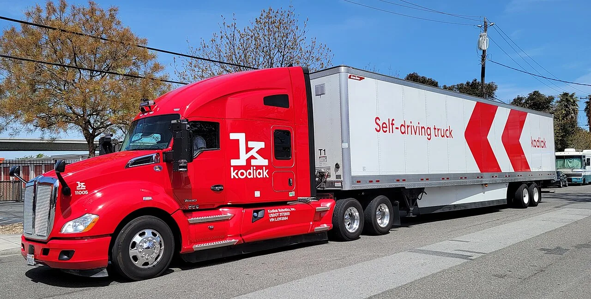
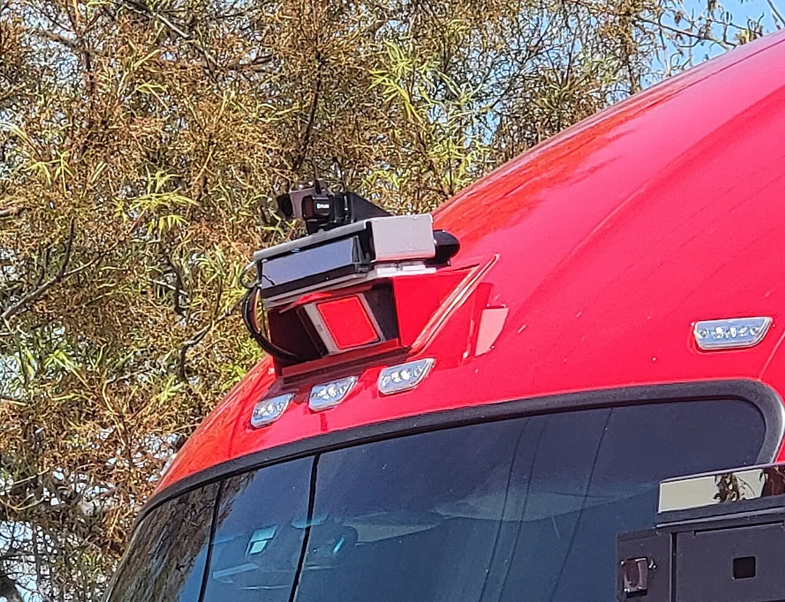

▲ 코디악의 자율주행 트럭. 캘리포니아가 대형 차량 시험 금지를 풀었다
캘리포니아가 1만 파운드(약 4.5톤)를 넘는 차량의 자율주행 시험을 막던 규정을 풀었습니다.
첫 허가가 두 회사에 나갔습니다. 오로라 이노베이션과 코디악 AI입니다.
로보택시가 승용차 영역을 열었다면, 이번엔 대형 트럭입니다. 다만 조건이 꽤 붙어 있습니다.
1. 무엇이 바뀌었나
핵심은 무게 기준입니다.
캘리포니아는 그동안 1만 파운드를 넘는 차량의 자율주행 시험을 허용하지 않았습니다. 약 4.5톤이니 대형 트럭은 전부 걸립니다.
그래서 자율주행 트럭 업체들은 텍사스와 애리조나 같은 주에서 주행 데이터를 쌓아왔습니다. 정작 로보택시가 가장 빠르게 확산된 캘리포니아에서는 트럭이 막혀 있었던 셈입니다.
4월 28일 새 규정이 승인됐고, 업체들이 봄에 신청했습니다. 그리고 8월에 첫 허가가 나왔습니다.
2. 허가를 받은 두 회사
오로라 이노베이션은 자율주행 트럭 분야에서 가장 앞선 업체 중 하나로 꼽힙니다. 이미 텍사스에서 상업 노선을 운영하고 있습니다.
🛣 오로라의 기존 고속도로 노선(텍사스)
- 포트워스 ↔ 엘패소
- 포트워스 ↔ 피닉스
- 러레이도 ↔ 댈러스
이 노선들의 공통점이 있습니다. 장거리 고속도로 구간이라는 것입니다. 자율주행 트럭이 가장 먼저 실용화되는 영역이 여기입니다. 차선이 명확하고 보행자가 없으며 변수가 적습니다.
코디악 AI는 아직 범위가 좁습니다. 마운틴뷰 사무실 인근을 중심으로 시험 중입니다.

▲ 코디악은 마운틴뷰 사무실 인근을 중심으로 시험하는 단계다
3. 아직 사람이 앉아 있어야 한다
이 뉴스에서 가장 중요한 조건입니다. 운전석에 안전 운전자가 반드시 앉아 있어야 합니다.
즉 무인 주행이 허용된 것이 아닙니다. 시스템이 운전하되 사람이 언제든 개입할 수 있는 상태를 유지해야 합니다.
이는 로보택시가 거쳐온 경로와 같습니다. 웨이모도 안전 운전자 탑승 → 무인 시험 → 상업 운행 순서를 밟았습니다. 트럭은 이제 첫 단계에 들어선 것입니다.
속도 제한 조건도 붙습니다. 제한속도 25마일(약 40km/h) 이하 도로에서는 시험이 금지됩니다. 다만 목적지 사이를 잇는 직행 경로인 경우는 예외입니다.
이 조건이 의미하는 바는 분명합니다. 주거지역과 학교 주변, 보행자가 많은 저속 도로를 배제하겠다는 것입니다. 고속도로 중심으로 데이터를 쌓으라는 신호입니다.
4. 왜 트럭이 승용차보다 어렵나
규제가 무게를 기준으로 나뉜 데는 이유가 있습니다.
①제동거리가 훨씬 깁니다. 40톤에 가까운 대형 트레일러는 승용차의 몇 배 거리를 필요로 합니다. 같은 판단 오류가 훨씬 큰 결과로 이어집니다.
②차체가 접혀 있습니다. 트랙터와 트레일러가 연결된 구조라 잭나이프 현상 같은 고유의 위험이 있습니다. 승용차 제어 로직으로는 다룰 수 없습니다.
③적재 상태에 따라 거동이 바뀝니다. 빈 트레일러와 만재 상태는 무게중심과 제동 특성이 완전히 다릅니다.
④사각지대가 큽니다. 센서 배치와 사각 처리가 승용차보다 까다롭습니다.
이런 이유로 기술적 난도는 로보택시보다 높습니다. 반면 주행 환경은 단순합니다. 고속도로 장거리 구간에는 보행자도, 복잡한 교차로도 없습니다.
그래서 트럭은 "어려운 차로 쉬운 길을 가는" 구조가 됩니다.

▲ 트럭은 제동거리와 적재 상태 변화 때문에 기술적 난도가 승용차보다 높다
5. 이 변화가 향하는 곳
자율주행 트럭이 상용화되면 파장이 작지 않습니다.
물류 비용 구조가 바뀝니다. 장거리 운송에서 인건비 비중이 크고, 운전자 근로시간 규제가 운행 효율을 제한해왔습니다. 사람이 필요 없으면 이 제약이 사라집니다.
운전자 부족 문제도 배경에 있습니다. 미국 장거리 트럭 운전은 고령화와 인력난이 심한 직군입니다. 업계가 자율주행에 투자하는 동기가 여기 있습니다.
동시에 일자리 문제가 따라옵니다. 이 부분은 이번 규정 변경 보도에서 다뤄지지 않았습니다.

▲ 장거리 고속도로 구간은 보행자도 복잡한 교차로도 없다
유럽에서도 비슷한 움직임이 있습니다. PACCAR 계열 DAF가 전기 트럭에 레벨 4 자율주행을 얹는 계획을 밝힌 바 있습니다. 전동화와 자율주행이 상용차에서 같이 진행되는 구도입니다.
6. 정리
캘리포니아가 1만 파운드 초과 차량의 자율주행 시험 금지를 풀었습니다. 규정 승인은 4월 28일, 첫 허가는 오로라 이노베이션과 코디악 AI에 나갔습니다.
다만 무인 주행이 허용된 것이 아닙니다. 운전석에 안전 운전자 탑승이 여전히 필수이고, 제한속도 25마일 이하 도로에서는 시험이 금지됩니다.
오로라는 이미 텍사스에서 포트워스↔엘패소 등 고속도로 노선을 운영 중이고, 코디악은 마운틴뷰 인근에서 시험하는 단계입니다.
트럭은 기술적 난도가 승용차보다 높지만 주행 환경은 단순합니다. 그래서 고속도로 장거리 구간부터 열리는 것이 자연스러운 경로입니다.